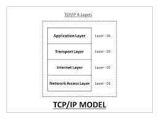

TCP/IP is a set of communication protocols used to connect devices over the Internet.
TCP divides data into packets while IP ensures they are sent to the correct destination.
Sending emails or browsing websites.
It is the foundation of Internet communication.